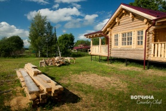
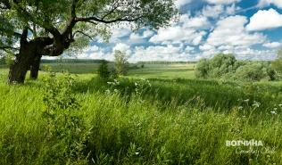
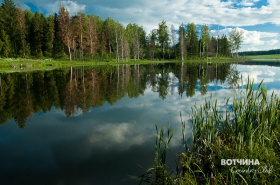
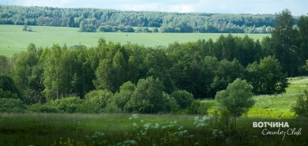

На протяжении долгих лет пределом мечтаний для жителя Москвы был участок площадью 6 соток в садовом или дачном товариществе, не важно на каком удалении от города, главное — в пешей доступности от ближайшей станции электрички. Эти времена давно прошли и сегодня участок за городом — это не просто место под огород. Это личное пространство человека, где он может реализовать свои желания. И не важно, будь то мечты о большом доме и размеренной жизни с семьей на свежем воздухе, или попытка черпать вдохновение для творческой работы в единении с природой. Желания могут быть приземленные — вести собственное фермерское хозяйство, или возвышенные — найти место для медитации, в котором можно черпать неиссякаемую энергию земли. Одним словом, собственный участок земли — это возможность реализовать себя в любом начинании, для которого пространство городской квартиры слишком мало.
Но глядя на доступные предложения на рынке загородной недвижимости можно сделать неутешительный вывод, что о пространстве для самореализации девелоперы думают в самую последнюю очередь. Да, с советских времен средняя площадь участков немного увеличилась, и теперь это не 6 соток, а
Клубный поселок «Вотчина Country Club» — это находка для тех, кто желает купить по-настоящему большой участок земли. Поселок находится в 140 км от МКАД по Ярославскому, Горьковскому или Щелковскому шоссе в самом сердце Золотого Кольца. На огромной территории в 320 га, окруженной вековыми лесами, расположены 138 участков площадью от 0,5 до 5 га. Ни один из жителей коттеджного поселка не будет чувствовать себя стесненным или ограниченным какими-то рамками. А если захочется пообщаться с соседями, всегда можно встретиться с ними в общественных зонах поселка, погонять в футбол или сыграть в гольф на оборудованной площадке.
Кто-то скажет, что 140 километров — это слишком далеко. Но если подумать, то это совсем не так. Как известно, все основные заторы скапливаются на подъезде к Москве. И не важно, где расположен твой участок, в 40 километрах или в 140, тебе все равно придется стоять в пробке на подступах к МКАД. А уж миновав пробки, проехать лишние
Поэтому не стоит бояться расстояний. Вы не будете чувствовать себя оторванным от столичной жизни. Тем более, что современные технологии позволяют организовать полноценный офис в любом уголке планеты и эффективность управления бизнесом от этого нисколько не пострадает.
Зато ваша личная эффективность только возрастет. Ведь на свежем воздухе и спится лучше, окружающее пространство наполняет вас энергией, мозг работает активнее и лучше чем где бы то ни было генерирует все новые и новые идеи.
Каждый житель поселка «Вотчина Country Club» вправе распоряжаться своим участком по собственному усмотрению, девелопер не ограничивает собственников в выборе архитектурной концепции дома. Если в обычном коттеджном поселке дома расположены близко друг к другу и архитектурные различия сразу бросаются в глаза, то большая площадь участков в поселке «Вотчина Country Club» практически полностью исключает эту проблему. Более того, площади участков позволяют строить на них не по одному дому, а два, три и более. К примеру, большая семья с взрослыми детьми и внуками может построить сразу несколько коттеджей чтобы места хватило всем.
Вам не обязательно заводить подсобное хозяйство, чтобы питаться экологически чистыми продуктами, для вас в поселке «Вотчина Country Club» работает настоящая экоферма. Парное молоко, омлет из деревенских яиц, свежевыпеченный хлеб, душистый мед с собственной пасеки — все то, что так хорошо знакомо вам из детства, вы сможете получить на экоферме.
«Вотчина Country Club» расположен в поистине живописном месте в окружении леса, большого количества водоемов, полей и лугов. В лесах полно грибов и ягод, а в непосредственной близости от поселка протекает река, богатая рыбой. Более того, один из ее притоков течет прямо через поселок, образуя в его центре небольшое озеро, также пригодное для рыбной ловли. Уникальное отличие этого коттеджного участка от тысяч других проектов в России — это возможность купить участок с собственным кусочком реки, она будет протекать прямо через ваш участок.
Ну и наконец, в поселке «Вотчина Country Club» есть все необходимые коммуникации и высочайший уровень сервиса, который редко встретишь даже в коттеджных поселках, расположенный в непосредственной близости от Москвы. Магистральный газ, электричество и внутрипоселковые дороги входят в стоимость участка, каждый из них уже готов к эксплуатации. Поселок круглосуточно охраняется, по периметру расположены пять постов охраны, сотрудники ЧОП регулярно патрулируют территорию, ведется видеонаблюдение.
Но самая главное, на что должны обратить внимание будущие собственники земли — это универсальная служба сервиса, которая круглосуточно и круглогодично готова оказывать жителям практически любые услуги, начиная от строительства дома, заканчивая поливкой цветов. При этом вам даже не обязательно приезжать в поселок, заказ на выполнение тех или иных работ вы можете сделать в московском офисе «Вотчина Country Club». Отработанная система и четко выстроенная логистика позволяет в самые короткие сроки выполнять все пожелания членов клуба, будь то уборка снега, покос травы, уход за огородом и так далее. При этом вам даже не обязательно приезжать в поселок, заказ на выполнение тех или иных работ вы можете сделать в московском офисе «Вотчина Country Club».
Кроме того, в единую клубную систему объединены проверенные застройщики, архитектурные бюро и дизайн-студии, которые помогут вам воплотить на вашем участке абсолютно любой, даже самый смелый и нереальный проект.
«Вотчина Country Club» — это не просто коттеджный поселок. Это абсолютно новый формат загородной недвижимости. Девиз поселка — «Все в вашей власти!» — полностью отражает его идеологию. Это ваша земля и вы вправе распоряжаться ей как пожелаете. Это своеобразный клуб тех, чьи представления о загородной жизни не укладываются в стандартные
Источник:
Error: Undefined variable: category_text File: /var/www/votchina.su/data/www/votchina.ru/templates/template-news.php (65)
{kind=link}
{kind=link}
{kind=link}
{kind=link}